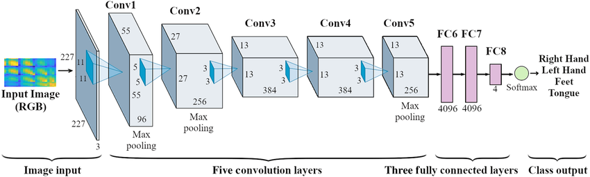

Technical Approach: AlexNet for Dog Emotion Recognition
How raw dog images become “happy vs. stressed” predictions using transfer learning.
What the Model Sees
Below are examples of the types of images used during training:

Dataset & Labeling
For this first version of PawSense AI, I built a small but balanced dataset of dog images. Each image is labeled as either Happy or Stressed/Sad based on visible body language and facial cues (ears, eyes, mouth, posture).
The data is split into training, validation, and test sets so I can tune hyperparameters without “peeking” at the final performance.
| Class | Train | Validation | Test | Total |
|---|---|---|---|---|
| Happy | 50 | 40 | 36 | 126 |
| Stressed / Sad | 50 | 40 | 36 | 126 |
| All images | 100 | 80 | 72 | 252 |
This balanced setup makes it easier to interpret accuracy and helps prevent the model from “cheating” by always predicting the majority class.
Image Preprocessing Pipeline
Before entering AlexNet, each image goes through a structured preprocessing pipeline:
- Resize: images are resized to 227×227×3.
- Normalization: pixel values are scaled to match ImageNet statistics.
- Tensor conversion: images are converted into PyTorch tensors.
- Augmentation: random flips, small rotations, and brightness jitter to improve robustness.
AlexNet Architecture (Short Version)
AlexNet is a convolutional neural network originally designed for large-scale image classification. In this project, it serves as a feature extractor for canine facial expressions and body cues.
Feature Extractor
- Conv1: 96 filters, 11×11 kernel, stride 4 → ReLU → MaxPool
- Conv2: 256 filters, 5×5 kernel → ReLU → MaxPool
- Conv3: 384 filters, 3×3 kernel → ReLU
- Conv4: 384 filters, 3×3 kernel → ReLU
- Conv5: 256 filters, 3×3 kernel → ReLU → MaxPool
Classifier Head (Modified)
- Flatten features from the last conv layer.
- Fully connected layer → ReLU → Dropout.
- Fully connected layer → ReLU → Dropout.
- Final fully connected layer with 2 outputs (Happy, Stressed).
Transfer Learning Strategy
Training a deep CNN from scratch on a small dog-emotion dataset would overfit quickly. Instead, this project uses transfer learning with AlexNet pretrained on ImageNet.
- Initialize the model with pretrained ImageNet weights.
- Use the convolutional stack as a fixed or lightly fine-tuned feature extractor.
- Replace the original 1000-class output layer with a new 2-class classifier.
- Train the classifier layers first, then optionally fine-tune deeper layers with a smaller learning rate.
This approach leverages generic visual features (edges, textures, shapes) learned from millions of images and adapts them to the “happy vs stressed” dog dataset.
Training Configuration
I experimented with several training setups in Google Colab, focusing on how optimizer, learning rate, batch size, and device (CPU vs GPU) affected performance.
Core Settings
- Loss: Cross-entropy loss.
- Optimizers tested: Adam and SGD.
- Batch sizes: 16 and 32.
- Learning rates: 1e-4 and 1e-5 for fine-tuning.
- Epochs: ~15–30 with early stopping based on validation loss.
- Input mode: RGB images (grayscale variants performed worse).
- Hardware: CPU and GPU (CUDA) runs for comparison.
Best-Performing Configuration
The final go-to configuration for this project is:
- Pretrained AlexNet backbone.
- Custom 2-class classifier head.
- Optimizer: Adam.
- Learning rate: 1e-4.
- Batch size: 32.
- Device: GPU (Colab CUDA).
This setup achieved the best combination of high validation accuracy, fast convergence, and a relatively small gap between training and validation performance.